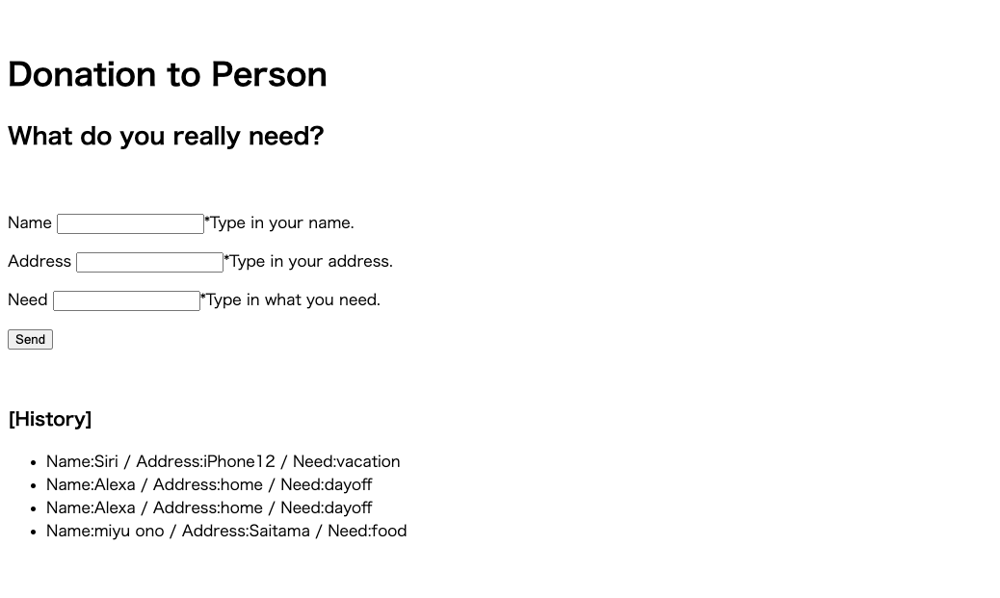

[9/23]
●夏休み進捗状況
[目標]
実際に入力できるところまで作る。
[結果]

ローカルでは名前・住所・欲しいものを入力してそれを履歴として残すところまで構築することができた。
これをデータとして保存するためにHerokuのPostgresというサービスと繋げる段階で止まった。
HerokuとはWebアプリケーションを作るときに必要となるサーバーや
データベース管理など様々な周辺のものを提供するサービスのことである。
結局、実際に入力できるところまではいかなかった。
●今後の方針
- ①Postgresと繋げる
- ②商品購入ページの作成
試作なのでAmazonのページと繋げてみる。
- ③フィードバックフォームを作る。